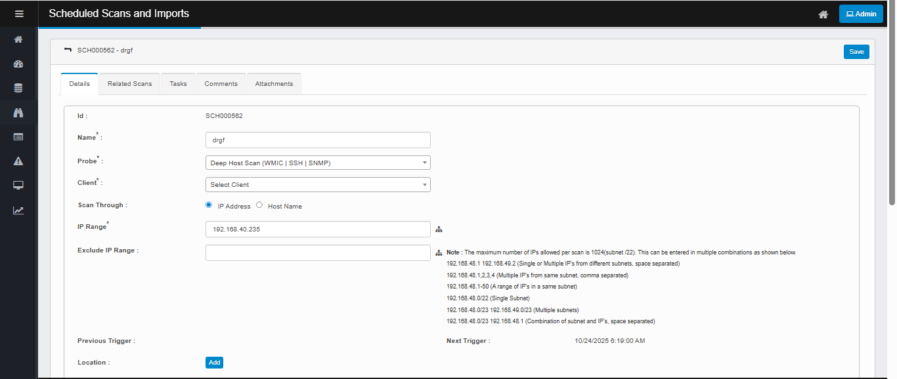

Editing a Scheduled Scan
-
Open the record.
Go to Discovery → Scheduled Scans and Imports. Click the row (Id/Name) you want to edit.
-
Modify the details
-
Name* – any clear job name.
-
Probe* – choose the discovery probe (e.g., Deep Host Scan (WMIC | SSH | SNMP)).
-
Client* – choose the Discovery client (tenant/site) this scan will be initiated and managed from
-
IP Range* – enter a target set (single IP, comma-separated IPs, ranges, or CIDR).
Tip: Max is 1024 IPs per scan; the help text under the field shows valid formats. -
Exclude IP Range (optional) – any IPs/CIDRs to skip.
-
Location → Add (if you tag scans by location).
-
Send Scan Report To → Add (choose users to receive the email report).
-
Timezone – pick the correct time zone for the schedule.
-
Scan Frequency – keep Current Time Settings to use the wheels.
-
Active – check this to make the job run.
-
Recurring – check if this should repeat yearly
-
Use the wheels to set Second / Minute / Hour / Day / Month / Weekday.
-
Pick a future time (saving a past time is blocked).
-
For recurring jobs, select all values you need (e.g., multiple weekdays).
-
-
Click Save. Verify Next Trigger updates as expected.